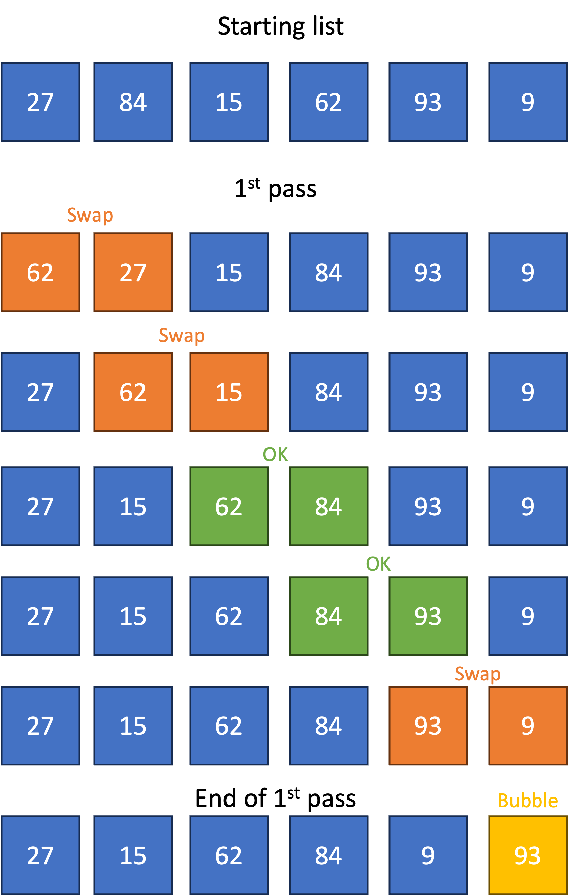
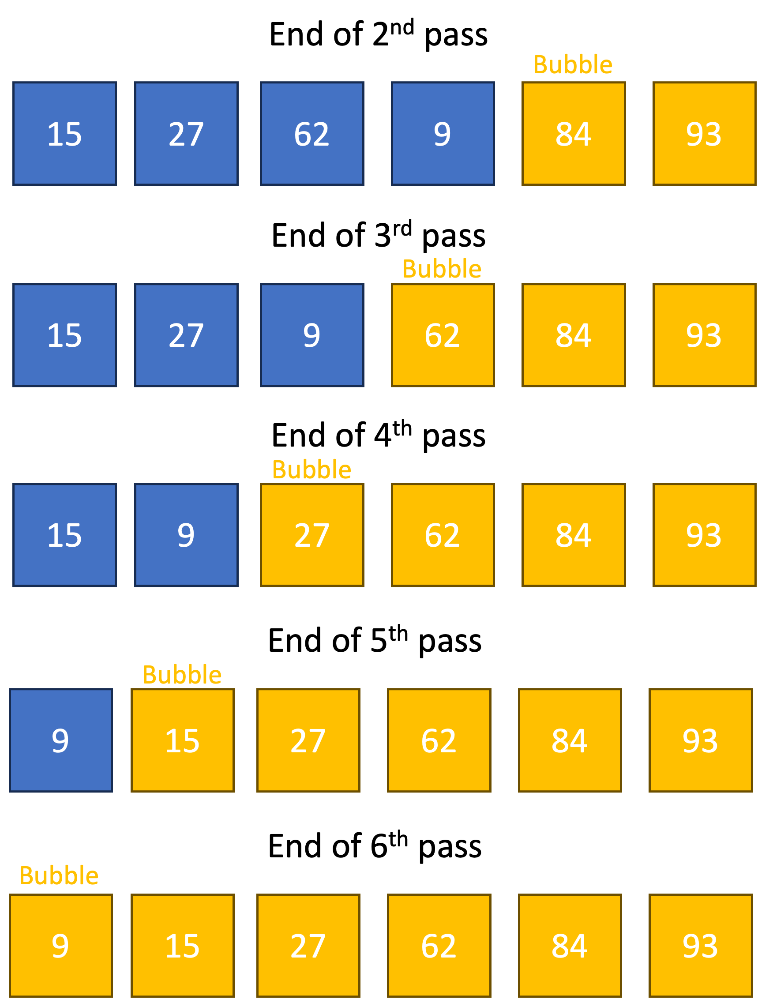

A sorting algorithm is an algorithm to put the items of a list in order.
A sorting algorithm is an algorithm to put the items of a list in order.
For example, the list [4, 2, 3, 1] can be sorted to get the list [1, 2, 3, 4].
 Bubble sort is a simple sorting algorithm.
Bubble sort is a simple sorting algorithm.
The steps to do a bubble sort are as follows:
1. Look at the first pair of numbers in the list
2. If they're in the wrong order, swap them
3. Move on to the next pair of items
4. Repeat steps 2 and 3 until you reach the end of the list
5. Repeat steps 1 to 4 until there are no swaps in the pass
On each pass, the next largest number "bubbles" up to the end.
Diagram 1 shows an example run of bubble sort on a list of numbers.
 Diagram 1
Diagram 1


 What is the maximum number of passes required for a list of length
What is the maximum number of passes required for a list of length n?
Tap/click to reveal
n passes, and in the xth pass, there can be up to n - x swaps.
So, the maximum number of swaps in bubble sort is ½(n2 - n),
and the worst case time complexity is said to be "on the order of O(n2)".